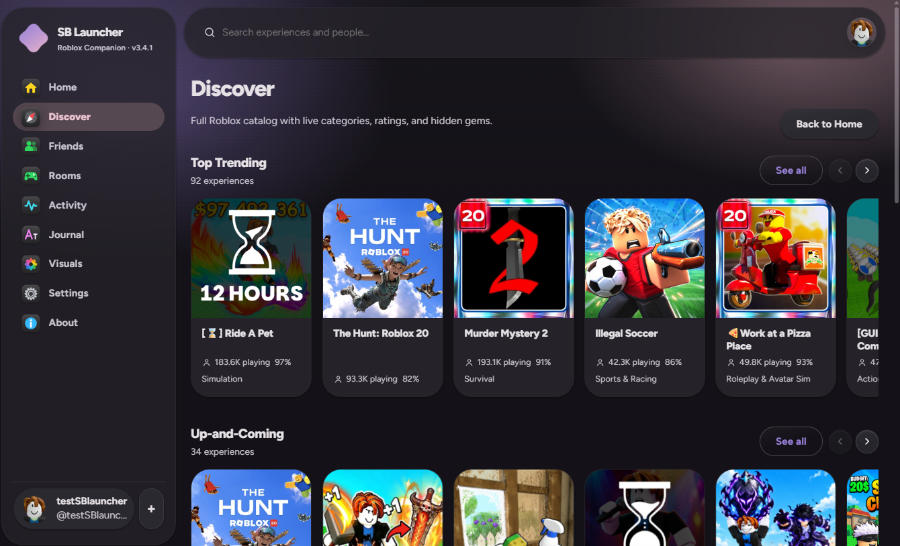
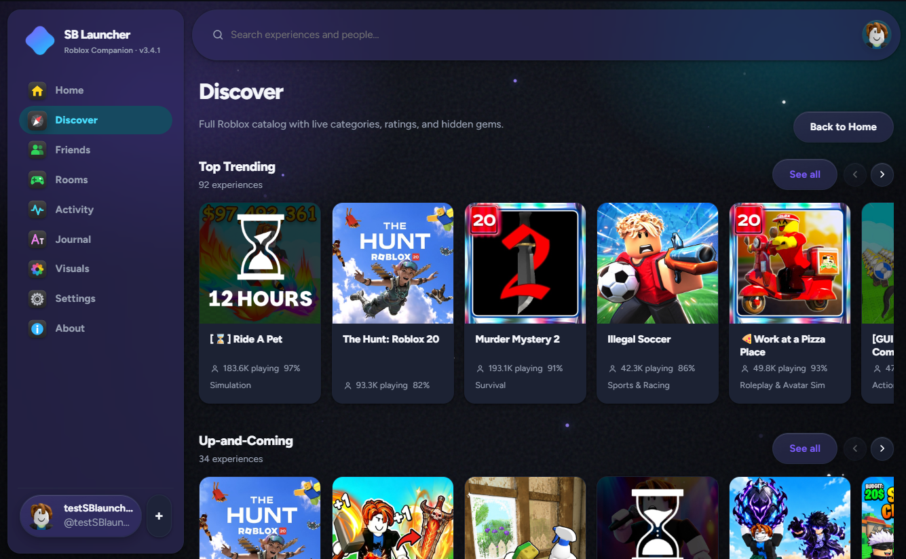
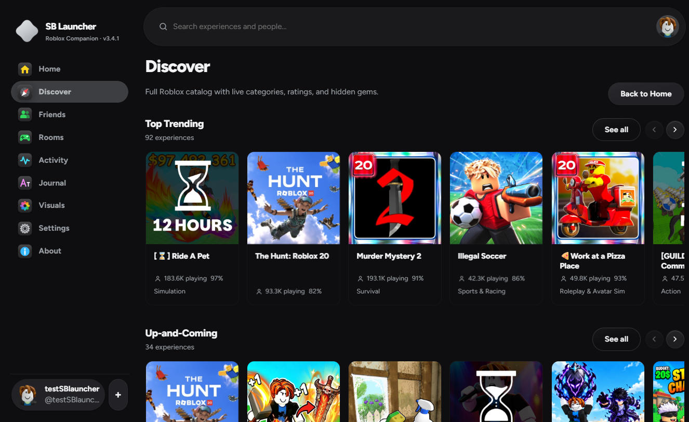
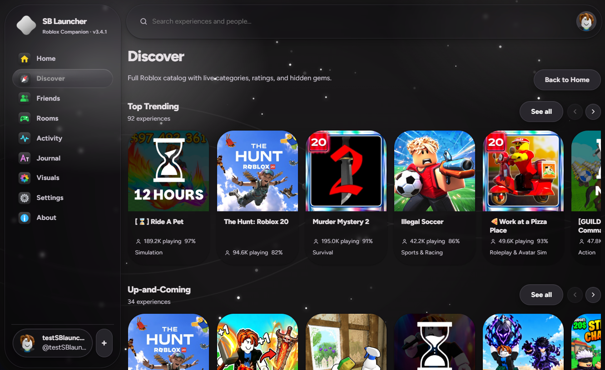

Profiles, rooms & visual polish
Arrange favorite games freely, enjoy richer room and event views, and fine-tune Liquid Glass blur.
25 September 2026SB Launcher is a Windows companion for Roblox — a fast Discover, real Friends presence, one-click launch, and a Visuals studio that lets you paint every surface. Wallpapers, glass, motion — make it yours.
Click Download — the site builds the installer from small parts (SHA-256 verified).
Latest updates
New visuals, smoother motion, and fixes that matter — see what's fresh and what's next.
Arrange favorite games freely, enjoy richer room and event views, and fine-tune Liquid Glass blur.
25 September 2026Brand logo updated to new liquid SB blob with frosted SB letters — visible on sidebar, About banner, site and installer.
18 September 2026Left nav bubble stretches like liquid glass, rooms server picker persists filters, smart filter treats 100% as “any”.
17 September 2026Visuals studio
Four of many. Every preset is a real theme you can save: wallpapers, glass, motion, fonts, density. Swipe and find the one that feels like you.

SB Midnight · Nebula wallpaper · Liquid glass pill

Arctic Glass · Arctic Bloom · spacious + parallax

Minimal · outline cards · no glass · compact

Your palette · your wallpaper · your glass — saved as preset
← swipe → · Visuals → Background / Textured visual effects / Layout & navigation · Save as preset
Why SB Launcher
Top Trending, Up-and-Coming, Friends Playing, For You — plus Surprise Me for hidden gems. Search experiences and people, open details, and jump in.
Presence that matters: who's online, what they're playing, which server they're on — when OAuth scopes allow. Join friends in one click.
Create a lobby, pick games together, vote, and launch the whole group into the same public server with enough free slots. Ready checks included.
Presets, wallpapers (bundled + your own 100% working), Layout & navigation, Colors & typography, Textured visual effects, Scroll & motion — every knob is live.
Runs on your PC with a private local API. No .ROBLOSECURITY, no client patching. Your Roblox install stays stock.
MIT. React + Fastify + .NET 8. Read the code, report issues, contribute — everything is public on GitHub.
One focused companion — not another cluttered overlay.
Search experiences and people, open details, and jump in fast.
See who's online and what they're playing when OAuth scopes allow.
Themes, fonts, wallpapers, motion, and deep glass controls — yours.
Runs on your PC with a private local API. No Roblox password storage.
The installer is split into small parts on this site, then assembled in your browser with integrity checks.
.ROBLOSECURITYSB Launcher is fully open source under the MIT license. Read the code, report issues, or contribute — everything is public.
SB Launcher is not affiliated with, endorsed by, or sponsored by Roblox Corporation. Use it in line with the Roblox Terms of Use.